Project: Seafood
From idea to report
In my first analytical job, I worked as a trainee in an analyst department in the Norwegian Seafood Council. This is an advocacy group for Norwegian seafood. Here, we used origin marketing in order to increase the value of all Norwegian seafood, regardless brand. One way to achieve that is increase consumer knowledge, while another is to privide the Norwegian seafood industry with the insight they need to make decisions. With the help of "the world's largest seafood database", my department and I produced various reports on seafood consumption worldwide.
One of the reports I worked in is called "Fish Market", which is published every other year. These reports focus on every export marked which is important for Norwegian seafood. We used various data-sources including consumerdata from these different countries, our own export data and data regarding the competitive situation in each market. Below, I uploaded an example from one of the most important export markets, especially on Norwegian salmon and mackerel, namely Japan.
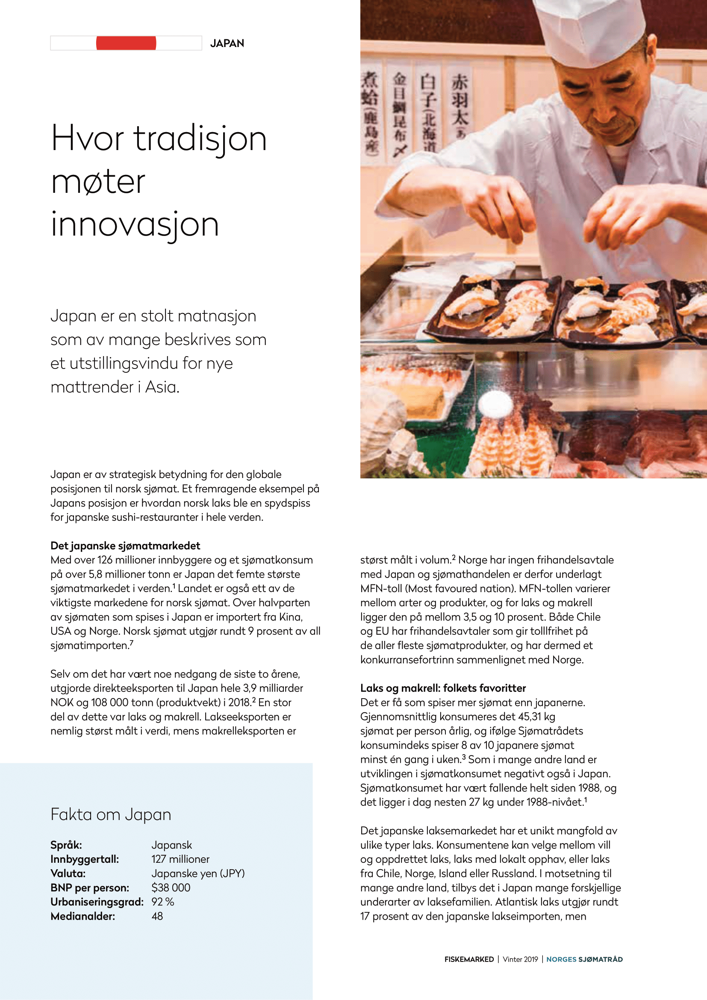 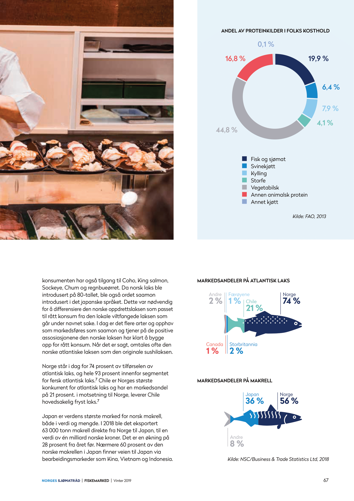Deep-dive
Another project I was involved in was a study where we delved deeper into seafood consumption in Japan. In this project, we worked together with a Japanese company that provided us with raw consumer data. The job of cleaning, analyzing and visualizing the data was up to us. As the vision of the Norwegian Seafood Council is to increase the value of Norwegian Seafood, the aim of our study was to do so as well. Therefore, we did not only map seafood consumption in Japan. We also mapped the different segments that could be of interest to Norwegian seafood producers, and we suggested different ways to approach these (potential) customers.
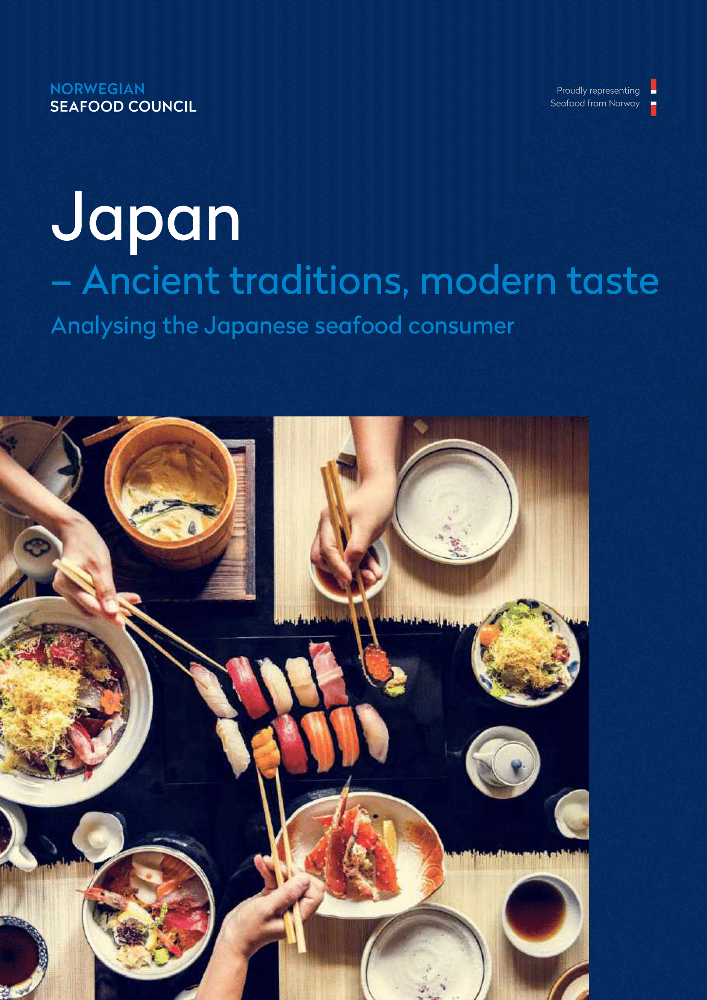 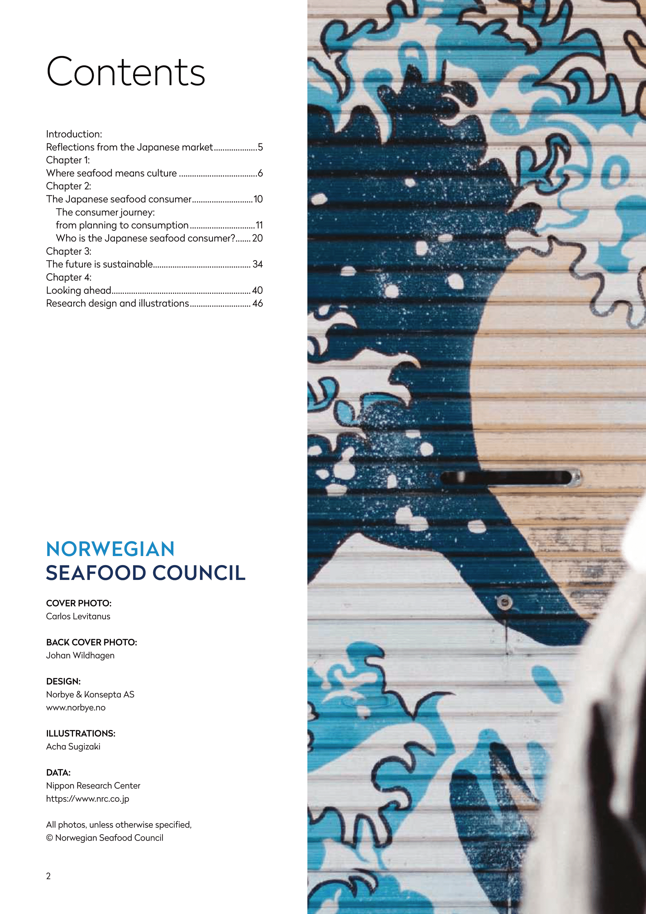 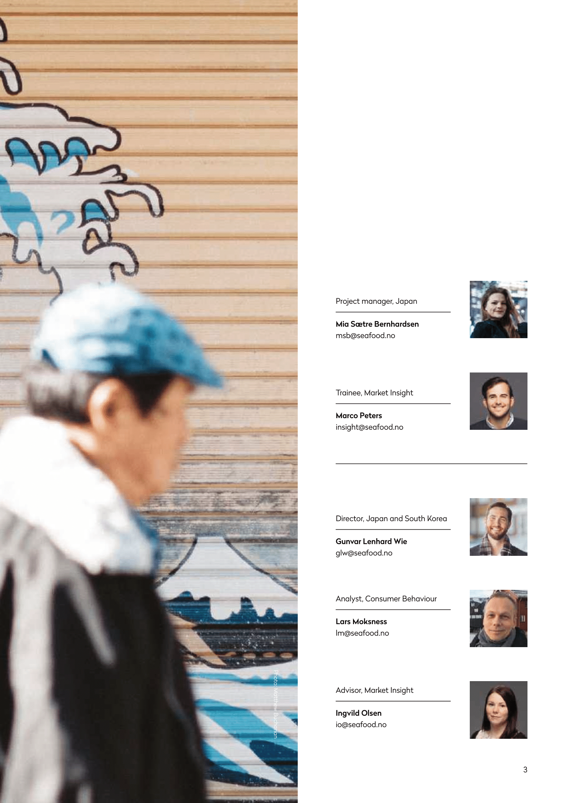Customer segmentation
Through quantitave and qualitative survey data, congregated by our Japanese partners, we divided the entire customer spectrum and identified seven different customer identities. Out of these seven, four groups where either reluctant or not interested in eating seafood. Amongst these groups, we did not see potential seafood consumers, thus we focused on the remaining three customer identities.
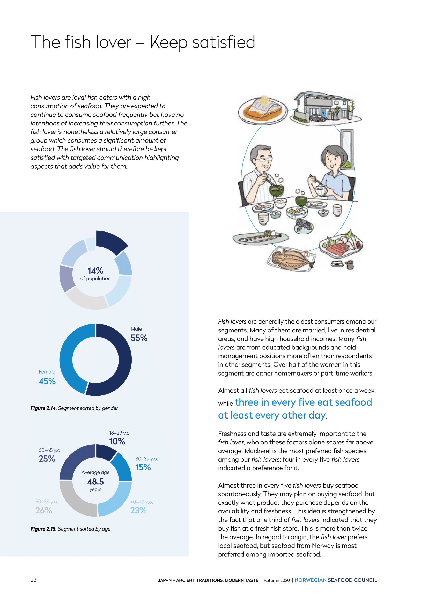 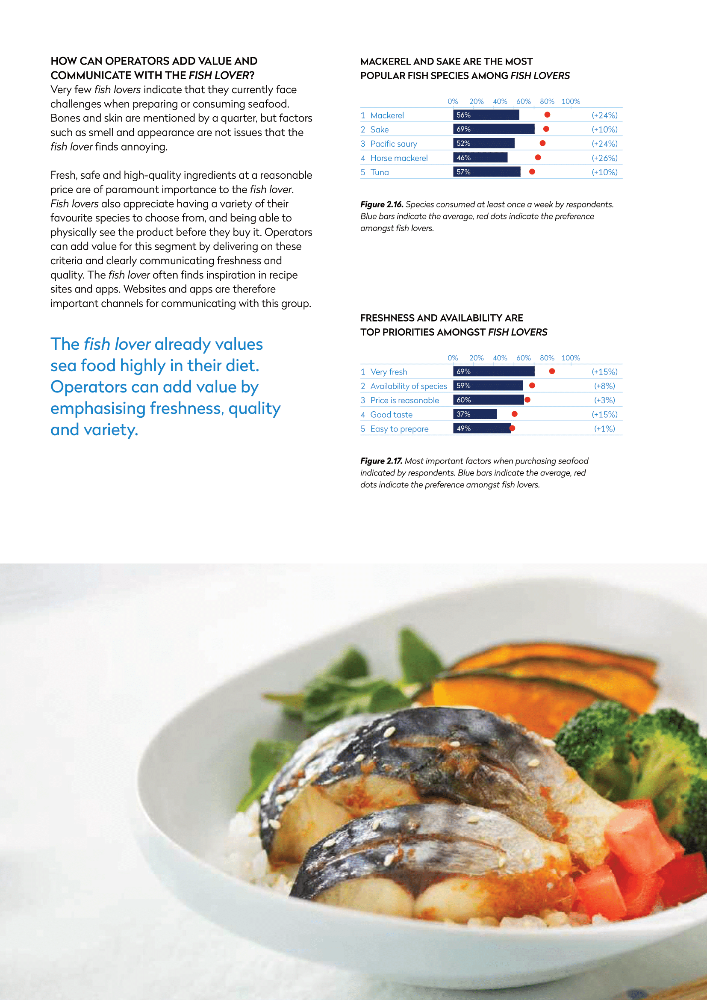 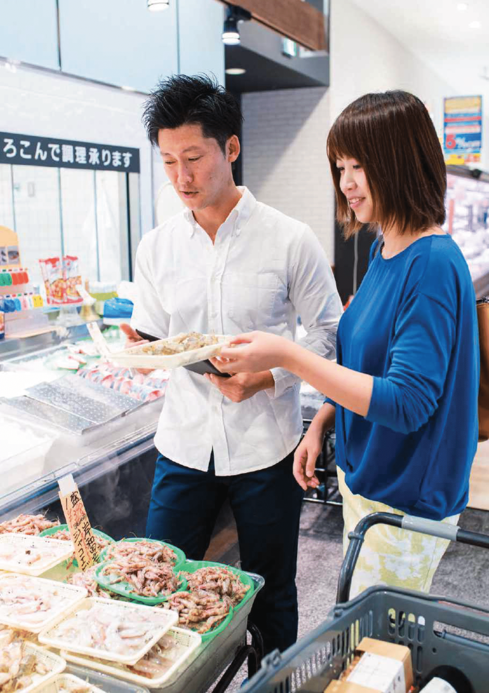The fish lover was identified as a consumer with a high ans stable consumption of seafood. This consumer group is not expected to increase its seafood consumption, but is expected to maintain their consumption at a high level. This group has the highest average age, which is just below 50, a large proportion of them are married and the average income is high. This is an interesting consumer group for producers that can deliver freshness, quality and variety. Fish lovers have a high willingness to pay and are willing to buy seafood in specialist shops and fresh counters. This is something manufacturers should capitalize on.
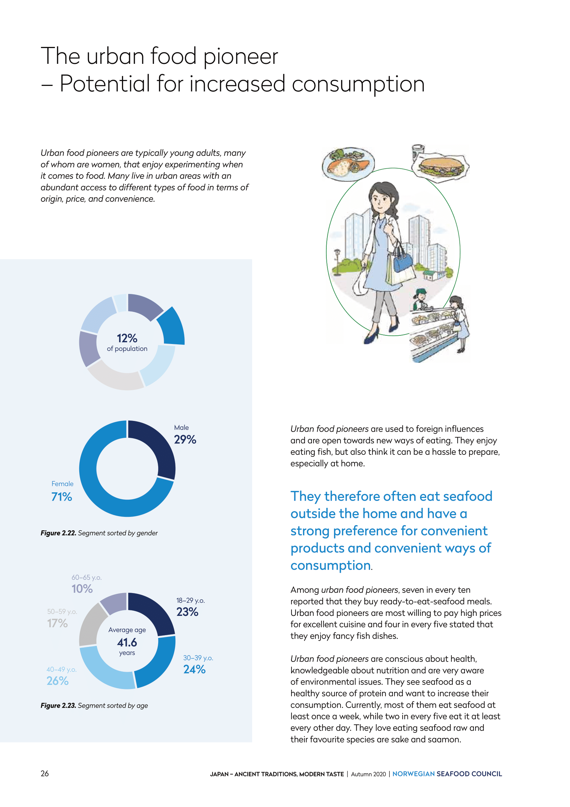 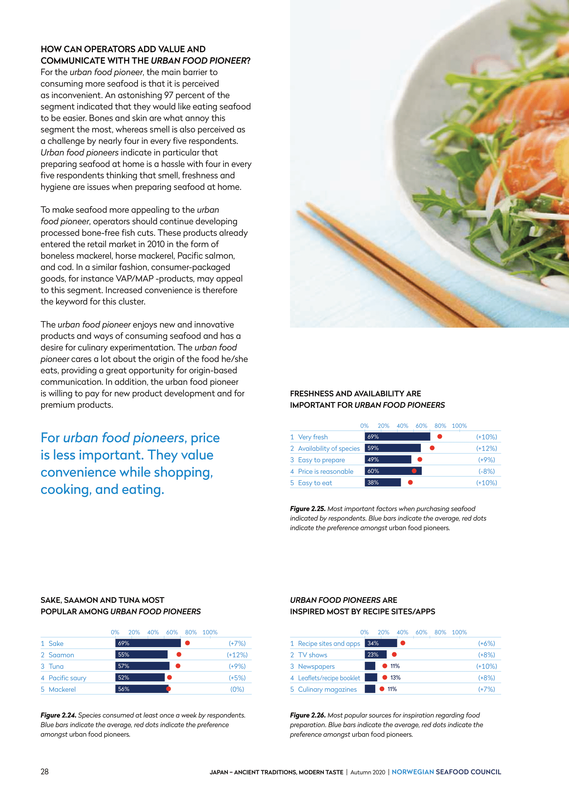The urban food pioneer was identified a a consumer group with relatively many young, urban consumers who love to try out new things when it comes to food. A large proportion of these consumers are women, many are highly educated, unmarried and usually without children. Most urban food pioneers live in the city and are used to a great variety of food options from all over the world. On average, these consumers are well off financially, they prioritize going out to eat and are positive towards seafood. They think that it is challenging and time-consuming to prepare seafood at home. This consumer group is very positive towards new products and new ways of preparing seafood at home. This is therefore an interesting consumer group for producers introducing new products or new concepts to the market.
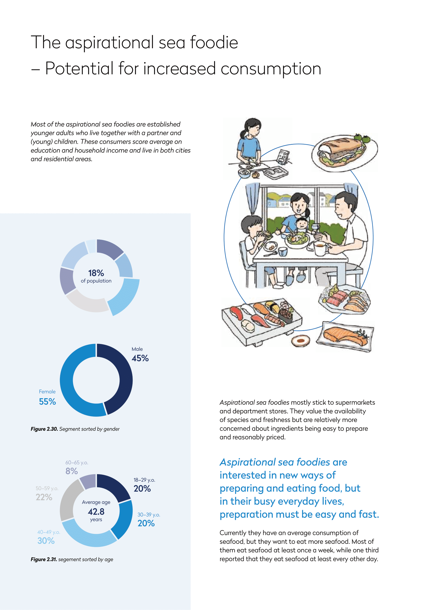 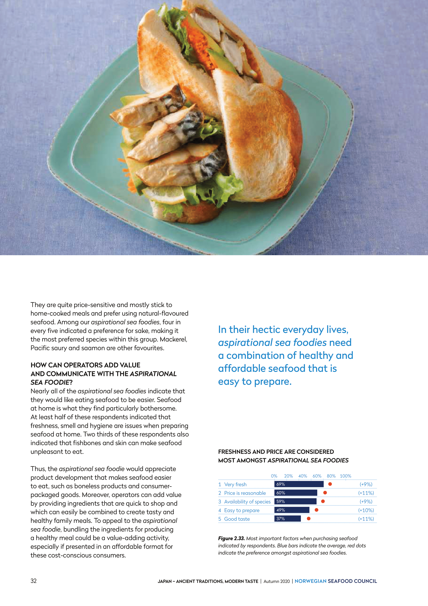 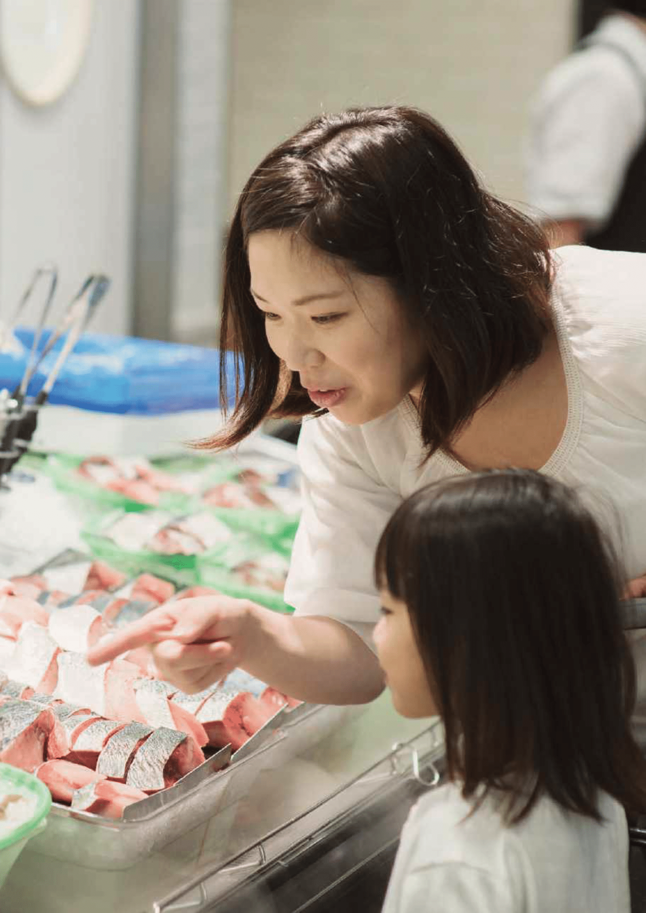The aspirational seafoodie was identified as a consumer group consisting mainly of young adults, often living together with a partner and usually with children. What characterizes this group is that they would like to eat more seafood, but they don't quite manage to achieve that. This group scores average on education and income and they live both in and outside cities. They mostly shop in grocery stores and are buy products that are easy and quick to prepare and not too expensive. To reach this group producers should offer this group fairly-priced products that are quick and easy to prepare and eat. In addtion, informing this group about seafood being a healthy and nutritious source of protein could help increase their consumption.